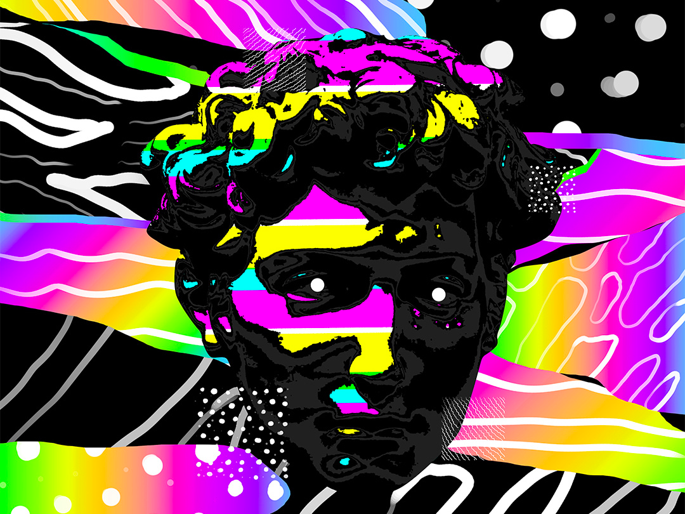

Project One
Visual elements of cyber punk:
1- Neon colors
2- Bright colors
3- Augmented Reality
4- Social Decay
5- Chromatic Aberration
6- 3D visualization
7- Dim lighting
8- Hazy or unclear vissuilazion
9- Thermal colors
10- Geometry
Interaction dynamics of cyberpunk
1- 3D
2- Augmented Reality
3- Interactive holograms
4- Vivid colors
5- Post-modern archeture
6- Chromatic Aberration
7- Vertual Reality
8- slow motion
9- EDM
Why did you choose this aesthetic? How do you identify what it is and isn't?
The aesthetic I chose was Cyberpunk. I selected this aesthetic because of its vivid color and how individuals who never saw this aesthetic would be amazed by the integration of technological advances and postmodern architecture. Moreover, I choose this aesthetic because, in my perspective, I see that what is now regarded as science fiction might become our inevitable future if we continue creating new technology and pushing the limit of our plant by abusing the materials we use which are not environmentally friendly and if we as the whole human race do not think about how negatively we are impacting the planet. I would identify Cyberpunk as an aesthetic that is futuristic yet realistic. It is futuristic in using projected reality, neon colors, and geometry in visual representation and electronic/ raving in audio presentation, and it is realistic because in many of the visual designs that use the Cyberpunk aesthetic would be very gloomy and dark, Society would be in total disaster; many buildings would seem old and not being taken care of.
The emergent media that I choose is a Music Visualizer
Robert brown created Music Visualizers in 1976 while work987ing for Atari Inc; they were combined with High fidelity stereo systems to help advertise them by showing people how the chord progression.
Who are the leading players in this field?- Music Visualizer - Renderforest Music Visualizer - Magic Music Visuals - VSDC Video Editor Free – Audio Spectrum Visualizer - After Effects – The Audio Spectrum Effect - Winamp - Media Monkey - Videobolt Music Visualizer - ProjectM Music Visualizer - VLC Media Player - PotPlayer - Videohive
What are the enabling technical developments which make this possible?As the music visualizer plays a song file, it reads the audio data in brief time slices. The visualizer uses a Fourier transformation on each slice; after that, the software used would extract the chord progression and update the visual display using the information provided from each chord progression. Many music visualization programs that use the method above create the visualization according to the "beat."
IdeaI would like to use an image that would be similar to the first image linked where a picture of a historical painting/sculpture and add some technological advance, with neon colors. The colors would change according to the song.
go to home page